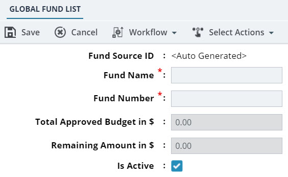

Defining Global Fund Sources
- The user is assigned the Fund Manager role.
The Fund Manager can manually create a Global Fund List record to define a fund source and make it available for projects.
-
In the module menu, click Home.
The Enterprise Dashboard is displayed.
-
In the navigation pane, expand the Fund Management folder, and then click Global Fund List.
The GLOBAL FUND LIST page is displayed.
-
Click New.
Figure 1. Global Fund List Page The GLOBAL FUND LIST page displays the following non-editable fields:Field Name Description Fund Source ID On saving the record, an automatically generated sequential number that uniquely identifies the global fund source is generated. Total Approved Budget in $ Note:This value is available only after transactions on global fund sources are performed.The total fund available in the defined fund source.
This amount is calculated as the sum of all approved transactions that are made in the link to Global Fund Transactions.
Remaining Amount in $ The remaining fund available in the defined fund source. The remaining amount is calculated as the difference between the total approved budget and the encumbered amount for all projects.
The encumbered amount for a project is the difference between all the approved add transactions and approved return transactions of all the project funds utilizing the fund source.
-
Provide the appropriate information in the fields, as described in the following table.
Field Name Description Fund Name Enter a name for the new fund source to be created. Fund Number Enter a unique identification code for the global fund source. Note:Only numeric values can be added.Is Active Ensure the check box is selected to activate the global fund source. Optionally, clear the check box to deactivate the global fund source. If a fund source is marked as inactive, the fund source will not be available for projects.
You can activate a global fund source at any point in time. To activate a global fund source, refer to Activating a Global Fund List Record.
-
Click Save.
The GLOBAL FUND LIST page is displayed.To perform workflow actions, refer to Global Fund List Workflow.